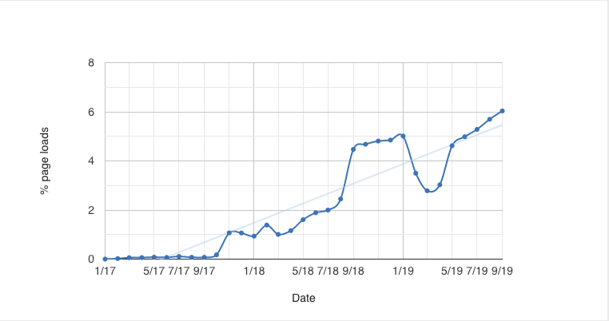
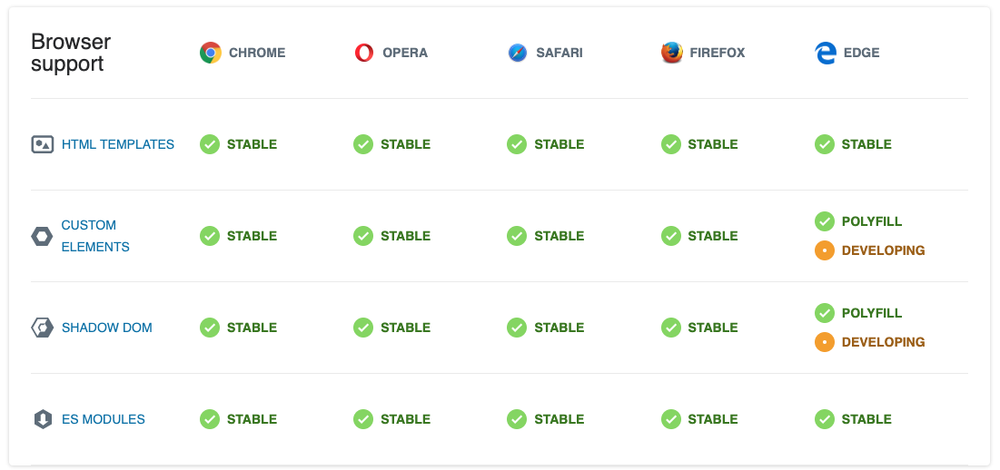
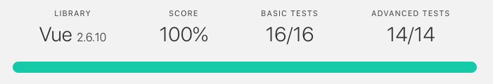
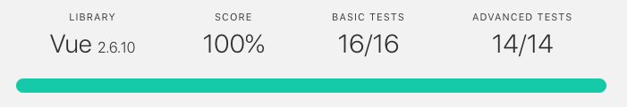
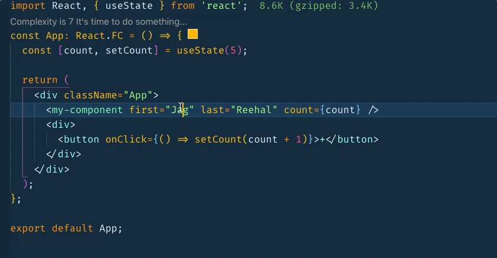

Build components NOT walls
About me
- I'm a contractor
- Get to work with lots of different people, solving different problems, using different things
- I'm currently leading a Vue & GraphQL project
- React (with TypeScript) my preferred library for building apps
- Trying not of offend/call out anyone. I'm still learning ✌️
Two of the biggest changes in web development
- State
- Components
A component should be?
- small
- reusable
- testable
- documented
- handle internal state
- props down, events up
- accessible
- styleable
- have a single responsibility
A component should also...
- have minimal dependencies?
- look and behave the same across browsers?
- work regardless of what else is on the page?
- be as easy to use as an HTML element?
- be able to be used by non-techies ü§ì without JS knowledge?
Let's build a component
- We're a React shop
- Our component uses hooks... but not all of our apps support hooks
- Do other applications within the organisation use the same library/framework?
- What if your organisation acquires another organisation?
- If your organisation ships components externally do you maintain and try to keep feature parity with all versions?
Web component can be made up of
-
Custom elements
// create class TodoItem extends HTMLElement {} // register customElements.define("todo-item", TodoItem); // use <todo-item></todo-item> - HTML templates
- Shadow DOM
- HTML imports
What is the Shadow Dom?
-
Provides 'iframe like' encapsulation... but is accessible,
stylable and responsive like a native element!

- Great for sharing - Twitter "sharethis tweet"
- BBC 'How I learnt to Stop Worrying and Love the Shadow Dom'
Styling Components
-
Styling components can be done using
- Regular CSS
- CSS modules
- CSS-in-JS
- Shadow DOM
-
Let's see how they cope with class style üí£
and element style üëª
Component using CSS
React component using CSS-in-JS
const View = styled.div`
color: #4d4d4d;
`;
// used like this
<View>
...
</View>
.htZyQy {
color: #4d4d4d;
}
...
Shadow Dom (NOT AFFECTED)
Themed Shadow Dom
:host{
background-color: #FFF:
}
:host(.dark) {
background-color: #000:
}
CSS Variables Shadow Dom
:root {
--todo-item-background-color: orange;
--todo-item-color: blue;
--todo-destroy-color: black;
}
Use your own (styled) content using a slot
<todo-item>
<slot/>
</todo-item>
Thanks for coming!
#UseThePlatform
if only it was that simple...
üôÉ Web component issues üôÉ
"This is my understanding, corrections are welcome"
Standards
- Should have been done better like WebAssembly
- Lack consensus e.g. Apple refused to implement features
- Spec change from v0 to v1 is still confusing as both are still used
- Incorrect message/approach/wording?
- Polymer the 'flagship' for web components was awful
- Horrible developer experience (example)
- Works in Chrome. Polyfills/prayers/thoughts for everyone else
üêò The Shadow DOM üêò
- Should NOT have been been part of web components
- Edge cases when used within forms, which are being fixed
- Is accessible but there are edge cases you be need to be aware of
- Understanding styling nuances e.g. inherited properties
- Server side rendering not possible
Community
- Outdated - The broken promise of Web Components
- Biased opinions and clever spin - Why I don't use web components. Who read the comments or counter arguments?
- One bad apple spoils the barrel mentality
- Competition is healthy and necessary but the 'fight' should remain clean and constructive
<fact-check />
- Era of echo chambers
- It's difficult in web development to keep up with everything
- Prominent figures are behaving like politicians making inaccurate statements
- Who unlike politicians are a trusted source of information, an authority
- People don't question but like and retweet shit posts anyway üï∂Ô∏è
- Imagine if you got all your news from just one source
But no one uses web components
- Arm
- Salesforce
- Amazon
- Bloomberg
- Porsche
- EA Sports
- Tesla
- Samsung
- Github
- McDonalds
- Coca Cola
- Microsoft
- Firefox
- Apple
Usage is growing
6% of all pages today use web components

Source:
Chrome Status
Support is excellent

Source:
Webcomponents.org
You use web components!
"Both Firefox and Chrome dev tools use web components!"
Seamless integration with MOST libraries and frameworks...
-
Custom Elements Everywhere
checks how interoperable web components are
 

...except React

- Read the issue about why
- Unfortunately this won't be changing anytime soon üíî
- Simple workarounds e.g. use-custom-element hook
Vanilla web components are & will always be üí©
"Just in the same way no ships vanilla JavaScript, no one will create vanilla web components either"Jag Reehal
The web platform is and always will be consistently inconsistent

Use a library of framework!
- Angular, Vue, Glimmer and Svelte have built in support to output web components
- If you don't want a build step you could look at lit-element or Haunted for a hooks like experience
I ♥️ Stencil
- Compiler not a framework
- Just add a script tag
- Dynamic polyfills
- Modern and legacy builds
- Supports IE11
- Unit, visual and end-to-end tests
- Tree shaking
- Document generation
- Typescript (TSX)
- Server side rendering (can be used with Next.js and Nuxt)
- No lock in. Can output vanilla web components
Integrating Stencil
-
Script tag
<script type="module" src="https://todo-mvc-stencil-web-components.surge.sh/todo-mvc-stencil-web-components/todo-mvc-stencil-web-components.esm.js" ></script> <script> nomodule="" src="https://todo-mvc-stencil-web-components.surge.sh/todo-mvc-stencil-web-components/todo-mvc-stencil-web-components.js" ></script> - npm module (Stencil React Example with Type Safety) 
This would be a great talk!

I refactored React & Vue versions of
TODO MVC
to use the
SAME web components
- Create web component, write tests and Storybook story
- Replace native component with web component
- Run E2E tests using Cypress.io after each step
- TL;DR - reduced native code, increased reuse, state management still the same
Stencil Todo Input
import { Component, State, Event, EventEmitter, h } from '@stencil/core';
@Component({
tag: 'todo-input'
})
export class TodoInput {
@Event({ eventName: 'input-submit' }) inputSubmit: EventEmitter;
@State() value: string;
keyUp = e => {
if (e.keyCode === 13) {
this.inputSubmit.emit(this.value);
this.value = '';
}
};
render() {
return (
<input
class="new-todo"
value={this.value}
type="text"
autoFocus
placeholder="What needs to be done?"
onInput={(ev: any) => (this.value = ev.target.value)}
onKeyUp={e => this.keyUp(e)}
/>
);
}
}Used like this in React
-
Before
const TodoInput = () => { const [textInput, onInputChange] = useState(''); const { onSubmitTodo } = React.useContext(TodoStoreContext); const handleInputEnterPress = e => { if (e.key === 'Enter') { onSubmitTodo(textInput); onInputChange(''); } }; return ( <> <input onKeyPress={handleInputEnterPress} className="new-todo" placeholder="What needs to be done?" autoFocus value={textInput} onChange={e => onInputChange(e.target.value)} /> </> ); }; -
After
const TodoInput = () => { const { onSubmitTodo } = React.useContext(TodoStoreContext); const [customElementProps, ref] = useCustomElement({ 'input-submit': onSubmitTodo }); return <todo-input autofocus {...customElementProps} ref={ref} />; };
Used like this in Vue
-
Before
<input class="new-todo" autofocus autocomplete="off" placeholder="What needs to be done?" v-model="newTodo" @keyup.enter="addTodo" /> -
After
// tell Vue not to panic we know what we're doing Vue.config.ignoredElements = ['todo-input']; <todo-input @input-submit="addTodo"/>
üî• Still blazingly fast! üî•
According to Lighthouse...

Web component future
- Edge case or not there are issues with web components, just like everything else e.g. still confusion around usage of React Hooks, there will be around Vue 3
- They are not, and never will be the silver bullet... but were they ever supposed to be?
- Standards are getting better but changes are required. This will take time and maybe a different approach?
- The ship has sailed for libraries "to adopt web components as the foundation to build the application component model upon"
Standards vs libraries... lets pour one out for angular
"Depending on who you ask, Web Components are either the best thing or the most irrelevant update to the web platform in the past few years. Why is that? Let's take a look at why there's such a range of opinions, and the cases where they're actually a good fit."
To my dismay, I have to agree with you. Here's an ongoing conversation from my DMs. pic.twitter.com/TcSwoXyQ4G
— Tejas Kumar (@TejasKumar_) November 12, 2019
Web components use cases
- Not when organisation is OK using a single library/framework
- Maybe not when building apps that don't share components
- Maybe when building design systems
- Yes when you want to use reusable components without the cost of loading a library/framework
- Yes when you want to share framework agnostic components outside of your organisation
Thanks!
- So web components. Could do better. Works well alone and great other libraries and frameworks.
- 'Tis the season of good will. Enjoy whatever you're using!
-
Let the fan boys fight it out!